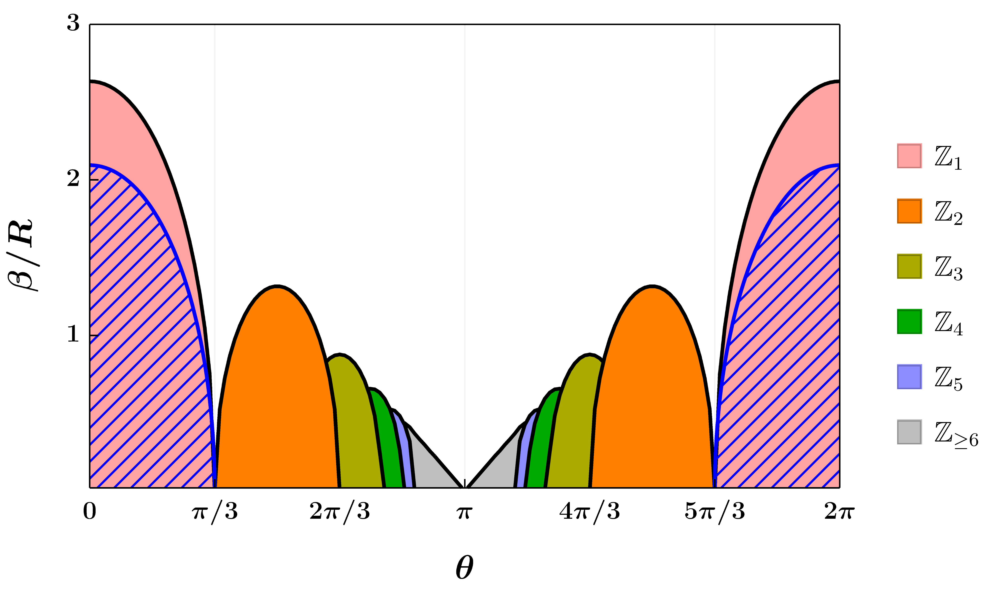

üëãüèΩ Welcome!

I am an NSF Graduate Research Fellow and a DDF Fellow at the University of Minnesota.
Previously, I completed Part III of the Mathematical Tripos at the University of Cambridge during 2016-2017.
Before starting my Ph.D, I was a vistor at the Perimeter Institute for Theoretical Physics in the Afshordi group from 2017-2018.
I am interested in theoretical aspects of gravity; particularly on understanding the classical, semiclassical, and quantum properties of black holes. Some of my projects are highlighted below.
My publications can be found here. For more information, please see my CV.
Quantum Gravity $\textit{\&}\ $ Holography
I have a long history of being involved in studying aspects of quantum gravity via holography. Holography, also referred to as AdS$_{d+1}$/CFT$_{d}$ or as the gauge/gravity duality, is a collection of ideas which form a toolkit. The toolkit allows one to convert difficult problems in a type of quantum field theory, known as conformal field theory (CFT$_{d}$), into simpler problems encountered by gravity theories with a negative cosmological constant, called anti de Sitter gravity (AdS$_{d+1}$). One condition to use the toolkit is that the conformal field theory operates in $d$-dimensions whereas the gravity theory lives in one dimension higher, i.e., $d+1$-dimensions.
Earlier in my academic career, I used gravity to model aspects of nuclear physics and the theory of strong interactions, QCD -- which behaves like a CFT$_d$ at high energies. Recently, I have turned my attention to using CFT$_d$ to answer problems in gravity through the holographic toolkit. Along this line, my current research interests are entanglement entropy, lower dimensional gravity, and black hole information.
Deforming CFT$_d$ and the Hawking-Page Transition
In my most recent paper on holography, my collaborator and I established a new result on the Hawking-Page transition in AdS$_{d+1}$ gravity and its relationship to the deconfinement/confinement phase transition found in certain CFT$_{d}$. Like the phase transition where ice melts into water at high temperatures, composite particles, such as protons and neutrons, also melt at high temperatures into a quark-gluon plasma. When a phase transition occurs in the CFT$_d$ side, holography tells us that a black hole is expected to spontaneously form from a collapse of thermal gas in the AdS$_{d+1}$ side. The spontaneous formation of black holes at a critical temperature $\beta$ is known as the Hawking-Page transition.

In an earlier paper by Edward Witten , it was observed that the deconfinement/confinement phase transition can be avoided by deforming the CFT$_d$ side. In such cases, it was conjectured that black hole formation is prohibited in such cases. We asked a simple question; Is this conjecture true, and if so, when this phase transition is avoided, is the formation of black holes suppressed abruptly or continuously? This is a sharp quantum gravity question we can answer via the holographic duality. Our construction uses a parameter $\theta$ which controls the phase transition. The results are highlighted in the right figure. We found that the phase transition (the filled regions) is avoided at $\theta=\pi/3,\pi,5\pi/3$ whereas the black hole formation (the hatched region) is prevented whenever $\theta\in[\pi/3,5\pi/3]$.
The result is surprising for several reasons. We expected black hole formation to be suppressed abruptly but it appears that black holes can still form for a small window! Secondly, there are mismatchs - there are missing islands and the temperatures $\beta$ do not precisely match up at $\theta=0$. It is always exciting to encounter such mismatches as they inspire deeper questions about the nature of gravity in holography that I am currently investigating!
Uniform Black String Instabilities in Anti de Sitter
In 2021, my collaborator and I showed that uniform black strings in AdS (AdS UBS) suffer from the Gregory-Laflamme instability; an instability which causes black string objects to develop a pinch in their horizons (shown in the left cartoon). At the end state of the instability, a singularity is expected to appear and the black string fragments into two black holes.
It was previously suspected that the AdS UBS could avoid the instability. However, we performed a numerical search for the instability and found a parameter regime where the instability can occur (shown in the below images in $d=5,\dots,9$ on the left and $d=10$ on the right).

If the conditions are just right, a black string will fragment into several smaller black holes at the end state of the GL instability. The transition between uniform black strings and black holes (BH) are interesting as a naked singularity is formed in finite time. However, if certain conditions are not met, the BS will instead converge onto different geometry without a naked singularity forming. In this paper, we argued that the AdS UBS could either fragment into a BH or converge onto a black funnel geometry (BF). We found conditions where the fragmentation is more likely (i.e., entropically favorable) rather transitioning smoothly to a BF state.